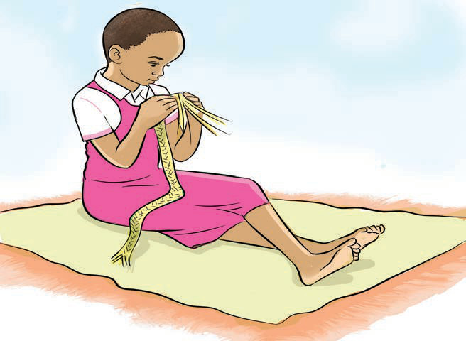

Weaving
Weaving is the process of lacing fibers together to make fabric or cloth.
Some of the materials used in weaving include grasses such as ukindu, thread and rope.
Study at this picture and answer the questions that follow:

Weaving a twill band
Questions
1.
From the picture, what items are being made?
2.
Mention the materials used to make the item.